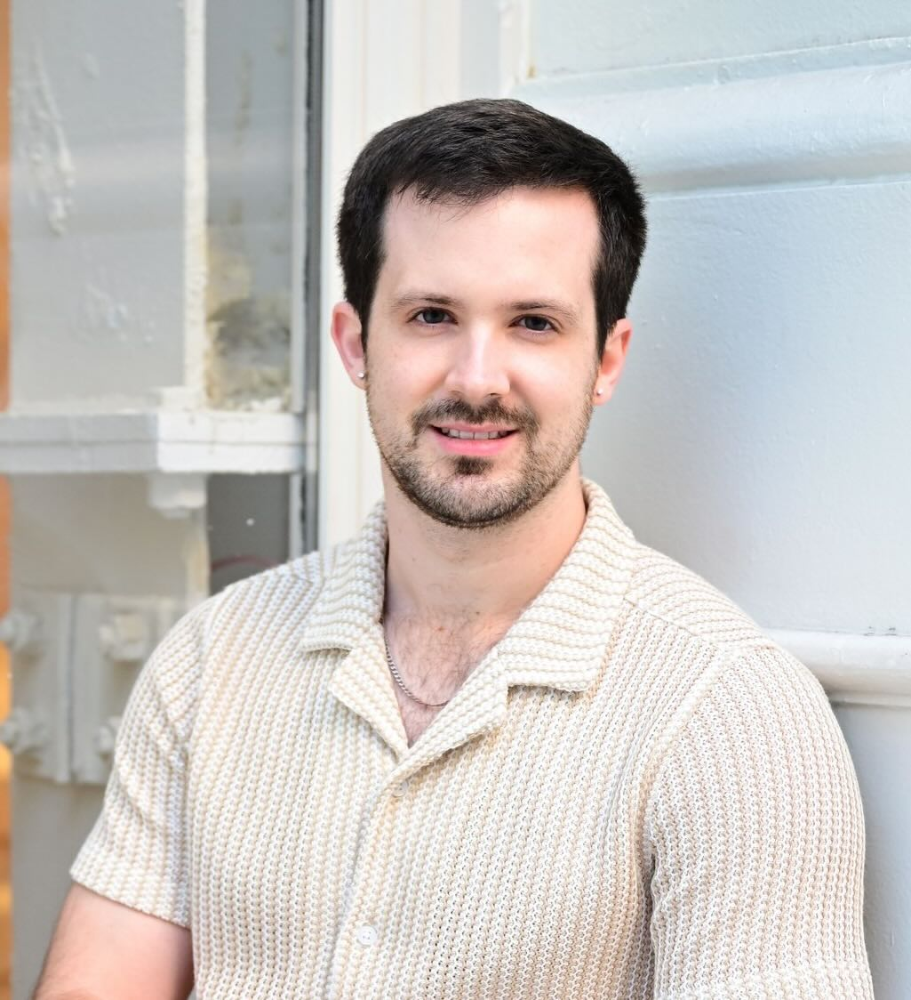

Rob Lorch --------- PhD Candidate, Computer Science @ UIowa Research Interests: - Automated reasoning - Computer security Email: robert-lorch@uiowa.edu Links: Google Scholar CV GitHub About ----- I'm a fourth-year computer science PhD student at the University of Iowa, where I am a member of the Computational Logic Center. I work under the supervision of Dr. Cesare Tinelli and Dr. Omar Chowdhury (@ Stony Brook University). Publications ------------ ICSE '26. R. Lorch, D. Dar, C. Tinelli, and O. Chowdhury, "Parse this! Summoning Context-Sensitive Inputs with Goblin," pdf S&P '25. D. Dar, R. Lorch, A. Sadeghi, V. Sorcigli, H. Gollier, C. Tinelli, M. Vanhoef, and O. Chowdhury, "SAECRED: A State-Aware, Over-the-Air Protocol Testing Approach for Discovering Parsing Bugs in SAE Handshake Implementations of COTS Wi-Fi Access Points," pdf NFM '25. B. Meng, S. Varanasi, R. Lorch, A. Moitra, K. Siu, S. Paul, M. Durling, N. Beniwal and N. Visnevski, "TRACE: Toolkit for Requirements Analysis Capture and Elicitation," pdf RAID '24. R. Lorch, D. Larraz, C. Tinelli, and O. Chowdhury, "A Comprehensive, Automated Security Analysis of the Uptane Automotive Over-the-Air Update Framework," pdf FormaliSE '24. R. Lorch, B. Meng, K. Siu, A. Moitra, M. Durling, S. Paul, S. Varanasi, and C. McMillan, "Formal Methods in Requirements Engineering: Survey and Future Directions," pdf FMCAD '23. D. Larraz, R. Lorch, M. Yahyazadeh, F. Arif, O. Chowdhury, and C. Tinelli, "CRV: Automated Cyber-Resiliency Reasoning for System Design Models," pdf Australasian Journal of Combinatorics '22. B. Carrigan, D. Diaz, J. Hammer, J. Lorch, and R. Lorch, "Constructing (3, b)-sudoku pair Latin squares," pdf Bulletin of the Institute of Combinatorics and its Applications '21. B. Carrigan, J. Hammer, J. Lorch, R. Lorch, and C. Owens, "List colorings count rokudoku-pair squares," pdf Teaching -------- Below is a list of courses I have taught in various capacities. * UIowa Teaching Assistant [CS:4420, Spring '22] Artificial Intelligence [CS:5810, Fall '21] Formal Methods of Software Engineering [CS:2640, Fall '21] Computer Organization * Grinnell College Class Mentor [CSC-207, Spring '21] Object-oriented data structures and algorithms * Grinnell College Peer Tutor [CSC-161, Spring '21] Imperative problem solving and data structures